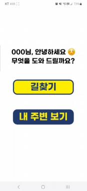
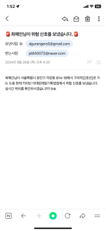

시각장애인을 위한 보안관 안심 동행 및 장애인 편의시설 안내서비스 Safe Companion and Accessible Facility Guide for People with Visual Impairments
공공데이터와 GPS 기반 위치 정보를 활용해 위험 구역을 알리고, 음성으로 길찾기와 주변 편의시설 안내를 이용할 수 있도록 만든 안전 이동 지원 서비스.
A mobility assistance service using public and GPS location data for risk-area alerts, with voice controls for directions and nearby accessible facilities.
- 주관Program & Partner
- 미래내일 일경험 사업(고용노동부) / ㈜씨티아이앤씨Future Tomorrow Work Experience Program, Ministry of Employment and Labor / ㈜씨티아이앤씨
- 참여 기간Period
- 2024.08 – 2024.09
- 담당 역할My Role
- 디자인 및 프론트엔드 개발Design and frontend development
개요Overview
시각장애인의 안전한 이동을 돕기 위해 위험 구역 알림, 음성 조작, 보호자 연계, 주변 편의시설 안내를 결합한 서비스입니다. 고용노동부 미래내일 일경험 사업에서 ㈜씨티아이앤씨와 진행했으며, 사용자의 위치와 주변 정보를 바탕으로 이동 상황에 필요한 안내를 제공하도록 구현했습니다.
This service supports safer travel for people with visual impairments by bringing together risk-area alerts, voice controls, guardian contact, and information about nearby accessible facilities. Developed with ㈜씨티아이앤씨 through the Ministry of Employment and Labor's Future Tomorrow Work Experience Program, it uses the user's location and surrounding information to provide relevant guidance during travel.
해결하고자 한 문제Problem
위험 구역 경고, 음성 조작, 보호자 연계 등 시각장애인의 안전한 이동에 필요한 기능을 통합한 지원 시스템이 부족했습니다. 위치에 맞는 위험 정보를 전달하는 동시에, 화면을 직접 확인하거나 터치하는 데 의존하지 않고 주요 기능을 사용할 수 있는 인터페이스가 필요했습니다.
There was a need for an integrated system covering risk warnings, voice interaction, and guardian contact. The interface needed to provide location-relevant safety information while allowing users to access key functions through speech as well as touch.
접근 방법Approach
- 공공·위치 데이터 융합: 공공데이터와 GPS 기반 위치 데이터를 함께 활용해 사용자의 현재 위치와 주변 환경에 맞는 정보를 연결했습니다.
- 실시간 위험 구역 알림: 위치와 상황을 고려하는 Context-aware 방식으로 위험 구역을 알리고, 이동 중 필요한 안전 정보를 제공했습니다.
- 음성 기반 조작: React 프론트엔드에 Text-to-Speech(TTS)와 온디바이스 Automatic Speech Recognition(ASR)을 연동해 음성 안내와 음성 입력을 지원했습니다.
- 이동 지원 화면: ‘길찾기’와 ‘내 주변 보기’를 중심으로 안내 기능을 구성하고, 긴급 상황 확인 및 보호자 연계 기능을 제공했습니다.
- Public and location data: Combined public datasets with GPS location information to connect users with relevant information about their surroundings.
- Real-time risk-area alerts: Used location and situational context to notify users about risk areas and provide safety information during travel.
- Voice interaction: Integrated text-to-speech (TTS) and on-device automatic speech recognition (ASR) into the React frontend for spoken guidance and voice input.
- Mobility assistance interface: Organized the main functions around directions and nearby information, with emergency confirmation and guardian contact features.


담당 역할My Role
디자인 및 프론트엔드 개발을 담당했습니다. 이동 지원 기능을 이용하는 사용자 화면을 구성하고, React 기반 음성 안내와 온디바이스 음성 인식을 연동해 음성으로 서비스를 조작할 수 있도록 구현했습니다.
I was responsible for design and frontend development. I built the user-facing mobility assistance screens and integrated React-based speech output with on-device speech recognition so the service could be operated through voice.
결과Results
- 실시간 위험 탐지와 음성 기반 조작을 갖춘 시각장애인 맞춤형 안전 이동 서비스 구현.
- TTS·ASR 기술을 실제 사용자 인터페이스에 연동하고, 공공·위치 데이터를 활용한 서비스 개발 경험 확보.
- Implemented a mobility assistance service for people with visual impairments, combining real-time risk detection and voice controls.
- Gained experience integrating TTS and ASR into a user interface and developing a service around public and location data.